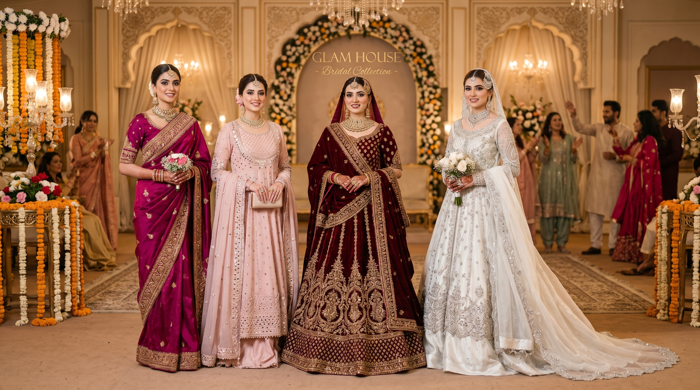

Your wedding day is one of the most important days of your life, and finding the perfect bridal dresses in pakistan is a journey that deserves the very best guidance and options. At Glam House, we have built a collection of bridal dresses in pakistan that speaks to every bride — traditional, modern, and everything in between. From breathtaking embroidery to luxurious fabrics, every piece in our bridal range is designed to make you feel extraordinary on your special day.
The pakistani bridal gown has become one of the most celebrated styles in South Asian fashion, and it is easy to understand why. A well-crafted pakistani bridal gown combines the richness of traditional embroidery with the elegance of a flowing silhouette, creating a look that is both timeless and deeply rooted in cultural beauty. At Glam House, our pakistani bridal gown collection features designs from some of the most talented pakistani bridal designers in the country, ensuring that every bride finds something truly special.
For brides who prefer a more traditional look, our range of bridal pakistani suits is a wonderful choice. Bridal pakistani suits are a classic staple of South Asian weddings, offering a look that is elegant, culturally rich, and endlessly versatile. Whether you are dressing for a mehndi, barat, or walima, a beautifully embellished set of bridal pakistani suits will ensure you look absolutely stunning from every angle. Our collection includes hand-embroidered designs, mirror work pieces, and heavily embellished styles that are guaranteed to turn heads.
Our bridal pakistani outfits range is one of the most comprehensive available online in Pakistan today. We understand that no two brides are alike, which is why our bridal pakistani outfits collection covers a wide spectrum of styles, colours, and price points. From rich reds and deep magentas to soft blush tones and ivory whites, our pakistani bridal outfits are available in shades that complement every skin tone and personal preference. Each outfit is crafted with premium fabric and finished with intricate detailing that reflects the artistry of Pakistani craftsmanship.
The bridal wedding dress pakistani tradition is one that carries deep emotional significance. A bridal wedding dress pakistani is not just an outfit — it is a memory, a moment frozen in time. At Glam House, we take this responsibility seriously. Every bridal wedding dress pakistani in our collection is made with care, precision, and an understanding of what brides truly want on their most important day. Our designs balance heritage with modernity, giving you a look that feels both timeless and fresh.
If you are looking for pakistani bridal wear that stands out, our premium range has exactly what you need. Pakistani bridal wear is renowned across the world for its opulence, colour, and intricate handwork, and at Glam House we celebrate this tradition by bringing you the finest pieces available. Our pakistani bridal clothes are sourced from trusted designers and manufacturers who share our commitment to quality and authenticity. When you shop our pakistani bridal clothes collection, you can be confident that you are getting the real deal.
For brides on a budget, finding affordable bridal dress pk options without compromising on quality can be a challenge — but not at Glam House. Our bridal dress pk range includes stunning pieces at every price point, so every bride can look and feel like royalty regardless of her budget. We believe that beauty should be accessible to all, which is why our affordable bridal dresses pakistan collection is one of our most popular categories. Browse our range and discover just how far your budget can go.
The elegance of bridal sarees is something truly special. A beautifully draped bridal sarees look is timeless, sophisticated, and undeniably stunning. Our bridal sarees collection at Glam House features pieces in silk, chiffon, and georgette, adorned with delicate embroidery and embellishments that make each one a work of art. Whether you are planning a traditional ceremony or a fusion celebration, a gorgeous bridal saree is always a breathtaking choice.
For brides who love the dramatic flair of a lehenga, our bridal dress lehenga and pakistani bridal lehenga with price ranges offer something truly spectacular. A bridal dress lehenga is all about volume, colour, and grandeur — and our collection delivers on every front. We also make it easy to plan your budget with our transparent bridal lehenga with price in pakistan listings, so you always know exactly what you are getting and what you are paying for. No hidden costs, no surprises — just beautiful bridal fashion at honest prices.
In conclusion, whether you are searching for a show-stopping pakistani bridal gown, elegant bridal pakistani suits, a classic bridal wedding dress pakistani, or affordable online bridal dresses in pakistan, Glam House is your ultimate destination for bridal dresses in pakistan. We are passionate about making every bride feel her most beautiful and confident self. Explore our full collection of pakistani bridal wear and wedding dresses pakistani today and begin the most exciting shopping journey of your life — with free delivery and expert guidance every step of the way.